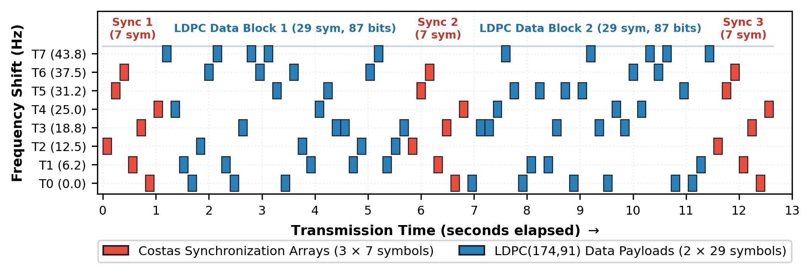

Buong 4-Step na Contact sa loob ng 60 Segundo
4× Bilis ng Pileup sa Single-Carrier (240 vs 60 QSOs/h)
0.0 dB Walang Bawas sa Lakas
Ang LQ8 ay isang susunod na henerasyong amateur radio weak−signal protocol na muling nag−engineer ng pag−pack ng mensahe ga na walang bawas sa lakas ng RF (0.0 dB), na umaabot sa 480 QSOs/oras gamit ang dalawahang carrier.
1-on-1 na Mga Contact
Kinukumpleto ang buong contact sa 4 na transmission (60s vs 90s canonical o 75s na may RR73 sa FT8) sa pamamagitan ng pinakamainam na 4-step exchange (CQ → TUMAWAG → REPORT+73 → 73) sa buong sensitivity ng reference.
- 4 na pagpapadala kumpara sa 5–6 sa FT8
- 60 contact/oras (vs 40–48 sa FT8)
- 0.0 dB parusa sa lakas
High-Density Pileup
Sa tuluy-tuloy na pileup, ang slot 3 ay sumasapaw sa mga bagong tumatawag sa split frequencies, kinukumpleto ang 2 QSO bawat 30 segundo (240 QSOs/h, 4× kaysa sa single-carrier FT8) sa iisang carrier na may 0.0 dB power penalty (kumpara sa 60–120 QSOs/h sa FT8 Fox & Hound na may power split), umaabot sa 480 QSOs/h sa dual-carrier!
- 240 QSOs/h (1 carrier, 50 Hz, 0 dB)
- 480 QSOs/h (2 carriers, 100 Hz)
- 0.0 dB parusa sa lakas
100% Subok na Pisikal na Layer
Magkaparehong 8-GFSK modulation at LDPC(174,91) channel coding bilang FT8. Walang kinakailangang pagbabago sa mga radyo, soundcard, o antenna.
- Eksaktong 8-GFSK 50.0 Hz pisikal na transportasyon
- Karaniwan at 13-char na pinahabang callsign
- Natatanging pag-sync ng Costas para sa paghihiwalay ng protocol
Kakayahang Umangkop sa Maraming Rate
Walang putol na umaangkop sa high−speed VHF/contesting (LQ4: 30s QSO), ultra−fast burst (LQ2: 15s QSO), at extreme deep−signal DX (LQ16: −24.0 dB SNR).
- LQ4: 30s 4-step na QSO (83.3 Hz)
- LQ2: 15s 4-step na QSO (166.7 Hz)
- LQ16: −24.0 dB DX (25.0 Hz)
Operasyon at Ecosystem
Magpalabas gamit ang native na mobile software, nakatuong mga plano sa banda, at tuluy-tuloy na electronic logging compatibility.
qFT8
Katutubong mobile transceiver application na sumusuporta sa LQ8 kasama ng iba pang umiiral na mga digital mode. Magpatakbo ng mahinang-signal na mga digital mode kahit saan mula sa iyong Android device.

Mga Iminumungkahing Dalas ng Operasyon (Limitadong Pang-eksperimentong Mode)
Nakalaang 3.0 kHz sub-allocation ng channel para sa LQ8 sa limitadong pang-eksperimentong mode sa mga bandang ito lamang upang matiyak ang malinis at walang sagabal na pagsusuri ng mahinang signal.
Upang suriin ang pagganap ng mahinang signal sa malinis na RF spectrum nang walang interference, ang mga paunang operasyon sa ere ay isinasagawa sa limitadong pang-eksperimentong mode eksklusibo sa 40m, 30m, 20m, 17m, 15m, 12m, at 10m. Ang bawat dial frequency ay kumakatawan sa base carrier frequency ng isang karaniwang 3.0 kHz Upper Sideband (USB) channel (hal., ang 10.146 MHz ay sumasaklaw sa audio offsets mula 10.1460 hanggang 10.1490 MHz). Maraming istasyon ang maaaring sabay-sabay na magpatakbo sa loob ng bawat 3.0 kHz window sa magkakahiwalay na audio subcarrier.
Ang mga napiling bandang ito ay nagbibigay ng maayos at walang ingay na kapaligiran sa pagpapalaganap: ang 30m ay isang makitid na WARC alokasyon kung saan ipinagbabawal ang boses ng internasyonal na batas; nag-aalok ang 17m at 12m ng WARC spectrum na walang paligsahan, habang ang 40m, 20m, 15m, at 10m ay nag-aalok ng malalawak at tahimik na digital segment na nakahiwalay sa kani-kanilang voice phone segment.
| banda | LQ8 (3 kHz USB) | FT8 (Ref) | FT4 (Ref) |
|---|---|---|---|
| 40m (7.0 MHz) | 7.084 MHz | 7.074 MHz | 7.0475 MHz |
| 30m (10.1 MHz) | 10.146 MHz | 10.136 MHz | 10.140 MHz |
| 20m (14.0 MHz) | 14.084 MHz | 14.074 MHz | 14.080 MHz |
| 17m (18.1 MHz) | 18.106 MHz | 18.100 MHz | 18.104 MHz |
| 15m (21.0 MHz) | 21.084 MHz | 21.074 MHz | 21.140 MHz |
| 12m (24.9 MHz) | 24.925 MHz | 24.915 MHz | 24.919 MHz |
| 10m (28.0 MHz) | 28.084 MHz | 28.074 MHz | 28.180 MHz |
Tala: Ang LQ8 ay kasalukuyang aktibo sa limitadong pang-eksperimentong mode sa 40m, 30m, 20m, 17m, 15m, 12m, at 10m lamang. Ang mga karagdagang banda (kabilang ang 80m, 160m, 60m, at mga VHF/UHF band) ay opisyal na itatalaga sa mga darating na yugto alinsunod sa mga internasyonal na band plan.
ADIF Electronic Logging & Award Compatibility
Standardized na electronic logging format para sa LoTW, QRZ.com, eQSL, ClubLog, at mga amateur radio software suite.
Pag-log at Pagsusumite ng LQ8 QSOs: Practical Guidelines
Sa ilalim ng ADIF 3.x na detalye, ang pag-export ng mga contact gamit ang standard mode
Kapag nagsusumite ng mga log sa QRZ.com Logbook, ARRL Logbook of the World (LoTW), eQSL.cc, at Club Log, ang mga contact na naka-log sa ilalim ng DATA o MFSK ay kinikilala sa ilalim ng standard na UCC, ang mga contact na naka-log sa ilalim ng DATA o MFSK, MFSK, MFSK. WAC, at WPX award credits(gamit ang local software mode mapping kung kinakailangan).
Ang pormal na pagsusumite sa ADIF Working Group ay isinasagawa upang magtatag ng mga nakalaang katutubong enum token at suporta sa drop-down na menu sa lahat ng mga aplikasyon sa pag-log.
Karaniwang Pagtutukoy ng ADIF
Sinusunod ng lahat ng protocol sa pamilya ng LQ digital mode ang Amateur Data Interchange Format (ADIF 3.x) na mga alituntunin sa ilalim ng mode na DATA o MFSK na may mga protocol submode identifier.
Instant na Platform at Pagkatugma ng Award
Ang mga online na logbook ay tumatanggap ng mga contact sa ilalim ng mga kategorya ng digital mode para sa mga digital na parangal na may karaniwang pagsubaybay sa submode.
Karaniwang Mode at Submode Tag Reference:
| Protokol | ADIF Mode | ADIF Submode | Karaniwang Tag ng Komento |
|---|---|---|---|
| LQ8 | <MODE:4>DATA |
<SUBMODE:3>LQ8 |
<COMMENT:40>LQ Digital Mode Family - https://lq8.org |
Halimbawa ng Karaniwang ADIF QSO Record (.adi):
<STATION_CALLSIGN:6>HB9IPH
<MY_GRIDSQUARE:4>JN47
<CALL:5>TU2TU
<GRIDSQUARE:4>KL22
<QSO_DATE:8>20260815
<TIME_ON:6>002500
<BAND:3>30M
<FREQ:9>10.146000
<MODE:4>DATA
<SUBMODE:3>LQ8
<RST_SENT:3>-03
<RST_RCVD:3>+05
<COMMENT:40>LQ Digital Mode Family - https://lq8.org
<EOR>Paano Nakakamit ang 60s QSO Speed at Pileup Speedup
Sa pamamagitan ng pagpapalit ng matibay, paulit-ulit na pagpapalitan ng mga variable-length na prefix code, 24/16-bit collision-resistant hashing, at multi-response frame, ang buong mutual exchange ay ginagarantiyahan: parehong Maidenhead locator at signal na ulat ay ipinagpapalit na may katumbas na 73 na pagkumpirma.
FT8 Standard
Pamantayan ng LQ8
FT8 Pileup
LQ8 Pileup
Strategic Roadmap at Ecosystem Milestones
Ang aming malinaw na landas patungo sa pandaigdigang amateur radio standardization, multi-platform application, reverse beacon reporting, at electronic logbook integration.
Phase 1: Mathematical Specification at Reference Library Nakumpleto
Buong kahulugan ng variable-length na mga puno ng prefix na Huffman, 104-character na Varicode, CRC-14/CRC-24Q algorithm, at ang open-source na C++20 reference library (lq_lib) na may na-verify na saklaw ng pagsubok at kumpletong cross-platform validation.
Phase 2: Native Mobile Applications at Field Validation Aktibo / Kasalukuyan
Comprehensive over-the-air field validation. Native na pagpapatupad ng mobile sa qFT8 para sa Android (qFT8.com) at pagbuo ng mga native na iPhone / iPad (iOS) transceiver application para sa portable at field-day na operasyon.
Phase 3: Pag-ampon sa pamamagitan ng Malawak na Aplikasyon at Mga Spotting Network Aktibo / Isinasagawa
Pag-ampon ng malawak na application tulad ng WSJT-X, JTDX, N1MM+, Ham Radio Deluxe, at Log4OM, pati na rin ang live na pag-uulat sa pamamagitan ng PSKReporter service, Reverse Beacon Network (R.Spot), Reverse Beacon Network (R.Spot), at BN.
Phase 4: Formal ADIF Standardization at Dedicated Logging Ecosystem Isinasagawa
Pormal na pagsusumite ng LQ8 enum token sa Amateur Data Interchange Format (ADIF) Working Group (kumukumpleto sa umiiral nang 100% compliant
Phase 5: Pagpapakilala ng LQ4 (High-Speed Profile) at Pagpapalawak ng Protocol Roadmap sa hinaharap
Kasunod ng malawakang pagpapatakbo ng LQ8, pagpapakilala ng LQ4 — isang high-speed contest at VHF/UHF extension na naghahatid ng dobleng QSO throughput sa dobleng bandwidth (4-GFSK, 83.33 Hz bandwidth, 5.04 s transmission sa 7.5 s UTC slot). Ang LQ4 ay para sa LQ8 kung ano ang FT4 sa FT8: sa pamamagitan ng pagsasama-sama ng 4-GFSK na 7.5 segundong physical transport layer sa 4-step na Huffman prefix exchange ng LQ, kinukumpleto ng LQ4 ang mga kumpletong nakumpirmang QSO sa loob lang ng 30 segundo (kumpara sa 45 segundo sa FT4) na may zero na parusa sa SNR4 kaugnay ng multa sa FT4. Ang Phase 5 ay sumasaklaw din sa coordinated expansion sa mga karagdagang amateur band (kabilang ang 160m, 80m, at 60m) pati na rin ang mga extended speed profile (LQ16, LQ2).
Mga Teknikal na Detalye at Aklatan
Formal na akademikong detalye, open-source reference na pagpapatupad, interactive na physical layer explorer, at bit-level na mga tool sa inspeksyon ng mensahe.
Pormal na Detalye ng Papel
Komprehensibong papel na sumasaklaw sa pisikal na layer modulation, variable-length Huffman prefix code, Varicode, at protocol state machine.
Open-Source Reference Library (lq_lib) — C++20 at Pure C API
Mataas ang performance, zero-allocation na C++20 at purong C99/C11 na pagpapatupad ng reference na sumusuporta sa lahat ng LQ message encodings, GFSK continuous-phase audio synthesis, 2D STFT waterfall Costas synchronization, LDPC(174,91) Normalized Min-Sum codec na may >95% automated test coverage at paralleld multi-canditation.
Paghahambing ng Interactive na Pisikal na Mode
Galugarin ang pangunahing pamantayan ng mahinang signal (LQ8) at mga pinahabang mode (LQ4, LQ2, LQ16).
Completes full 1-on-1 contacts in 4 transmissions (60s vs 90s in canonical 6-slot FT8 [1.50×] or 75s with RR73 [1.25×]) at full reference sensitivity (-21.0 dB SNR) in identical 50.0 Hz bandwidth, and scales to 240 QSOs/h in continuous pileups (4× over single-carrier FT8, 2 QSOs every 30s, up to 480 QSOs/h dual-carrier).
- 4-Step Full Exchange: 60s vs 75–90s in FT8 (and 240 vs 60 QSOs/h in continuous single-carrier pileups) with complete grid and report delivery.
- Zero SNR Penalty: Exact -21.0 dB sensitivity in 50.0 Hz bandwidth (+3.5 dB over FT4).
- 24-bit Hashes: Full CRC-24/Q (16.7M bins) preventing collisions.
- 13-char Callsigns: Extended compound callsign support (vs 11 chars in FT8).
- 104-char Varicode: ~17.2 chars/frame (+32.3% character throughput gain vs FT8).
Kumpletuhin ang Bit-Level Serialization Inspector (Lahat ng 13 Uri ng Mensahe)
Pumili ng anumang uri ng structured na mensahe upang siyasatin ang binary bitfield, packed hex, at computed CRC-14 parity nito.
Pisikal na Channel Tone Modulation
Continuous-phase 8-GFSK frame structure na may Costas synchronization arrays at LDPC(174,91) coded data symbol sa 50.0 Hz bandwidth.

Suporta ng Komunidad, mga Club at DXpedition
Kinikilala at sinusuportahan ng mga amateur radio club, DXpedition, mga programa ng parangal, at mga operator sa buong mundo.
Mga Club at Organisasyon
Mga radio club, contest group, at emergency communications team na sumusubok at gumagamit ng mga LQ digital mode.
- Wala pang nakatalang entry — isumite ang sa iyo sa ibaba!
Mga DXpedition at Aktibasyon
Mga operator ng DXpedition, IOTA, SOTA, at POTA na gumagamit ng mga multi-station response frame upang mabilis na maresolba ang mga pileup.
- Wala pang nakatalang entry — isumite ang sa iyo sa ibaba!
Mga Operator, QRZ at Parangal
Mga indibidwal na radio amateur na nagsasama ng LQ8 sa kanilang QRZ.com profile at mga talaan ng parangal.
Mapasama sa Listahan o Makipag-ugnayan
Ikaw ba ay isang club, tagapag-organisa ng DXpedition, o ham na may LQ sa QRZ? Makipag-ugnayan gamit ang contact form. Para mag-ulat ng bug, bisitahin ang GitHub Issues.